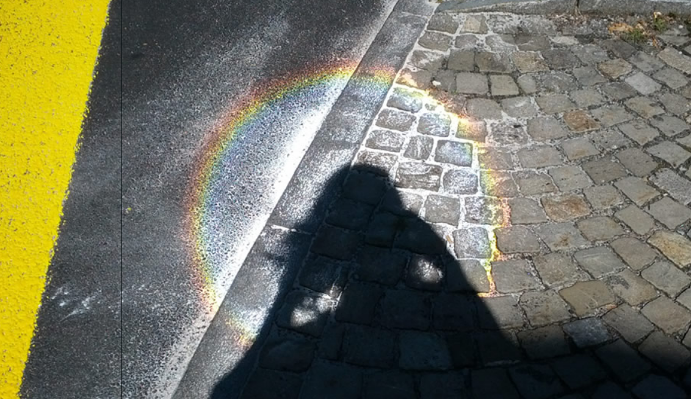
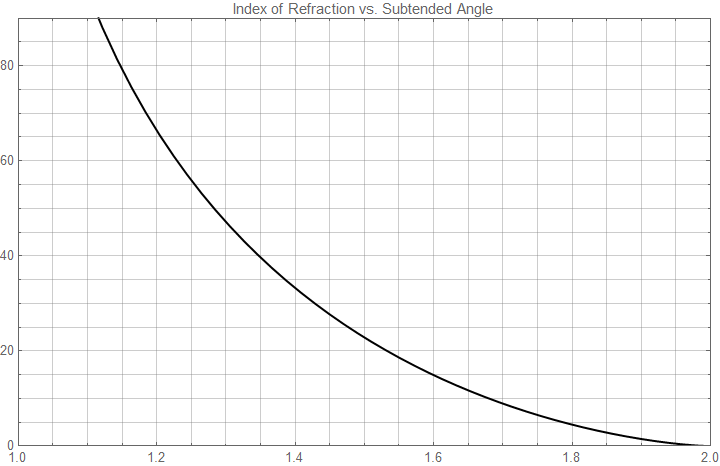

image source
Pavement Rainbows
This topic is a bit more obscure than the others explored on this website, but it remains a phenomenon that I have been curious about for a couple months now.
So what's the problem?
Sometimes, when you're walking or biking on newly paved streets, you may see a rainbow arc on the pavement. Just like normal rainbows, they are directly opposite the sun, but they have a much smaller subtended angle. What in the world is causing this??? (I am so sorry that I don't have a picture to prove that I'm not just seeing stars. I tried to take some, but the colors didn't even show up on my phone. I see this all the time, but I never get the chance to take a picture since I'm on my bike. Please, take some time and try to look out for this phenomenon---you will be pleasantly surprised!)
My hypothesis
After a great deal of complete confusion, here is my theory.
Reflective road paint (crosswalks, neon green bike lanes) make use of small glass beads sprayed on top of and adhered to the paint in order to make them retroreflective. The glass beads that do not adhere properly to the paint end up becoming scattered all over the new pavement. These scattered glass beads then create a rainbow in the same exact way that water droplets in the atmosphere create rainbows. After some time, rain carries away these un-adhered glass beads, and the effect is diminished sooner or later.
Physically, all these effects are well-known and no mysteries (rainbows, spherical retroreflectors, ...) but the connection between these two very unrelated subjects was the biggest challenge. Luckily, I happen to have studied and read up upon both.
I won't explain the physics of retroreflectors and rainbows in too much detail here, since these are common optical phenomena that already have very in-depth explanations all over the internet already. However, I will touch on some of the details of the physics that are somewhat relevant in this case.
As always, the wikipedia
page should be your first stop. Some key things to note:
- In this situation, spherical retroreflectors are used, not the more simple corner reflector. These make use of internal reflection.
- Spherical retroreflectors with index of refraction $n=n_0 + 1 = 2$ exhibit perfect retroreflection. (Each incident ray is reflected in the exact opposite direction.) This is not the case in actual spherical retroreflectors. Typically, $n\approx 1.5\text{ - }1.9,$ to facilitate the fact that the observer is not exactly in-line with the incident light source. This happens to be somewhat important for our rainbow formation.
- Here, we plot the subtended angle (or half the subtended angle, depending on your definition) of the rainbow as a function of index of refraction:

As you can see, the index of refraction $n=1.5\text{ - }1.9$ results in a rainbow smaller than that of water ($n=1.33$), which is consistent with my observation.
Update: After I wrote this, I discovered it was not an original idea! See
this page for some more info and pictures!
{kind=link}